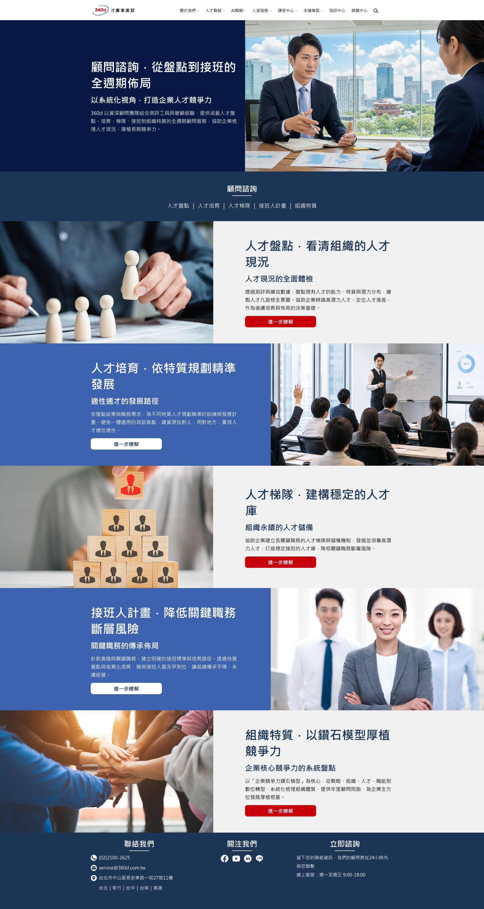

經營哲學
37年旅程的期許
關於360d才庫事業群
服務據點
心理測評
組織面
領導風格
組織文化
工作滿意度
職務面
WPNA
人才面
PPSS
MCES
PIPA
PAOS
顧問/諮詢
人才盤點
人才培育
人才梯隊
接班人計畫
組織特質
職能基因
360d AI平台
企業AI化
AI應用客製
AI應用學院
人才運用：人力派遣＆工作外包
代招/獵才：代理招募＆獵才顧問
人事外包：薪資外包＆人事外包
勞法體制：勞法諮詢＆人資體制
核心政策
綠色環境/產品
永續諮詢/服務
永續行動
